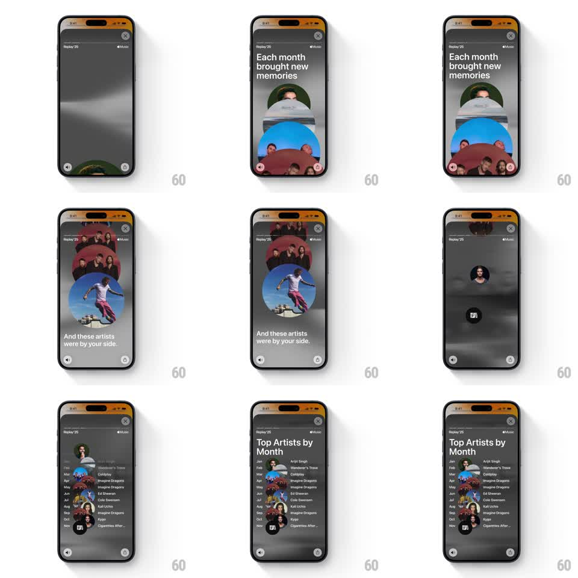

Media
Frame-by-frame

Rebuild this animation 1:1: Apple Music Replay '25 top-artists story - a floating stack of circular artist photos drifts under "Each month brought new memories", then the circles morph and snap into a chronological "Top Artists by Month" table as the copy flips to "And these artists were by your side."

Rebuild this animation 1:1: Apple Music Replay '25 top-artists story - a floating stack of circular artist photos drifts under "Each month brought new memories", then the circles morph and snap into a chronological "Top Artists by Month" table as the copy flips to "And these artists were by your side." ## Integration Integration: stack-agnostic spec - springs given as stiffness/damping, timed motions as duration + curve; map every value to your framework and animation library of choice. ## Scene Dark gray, slightly smoky story screen (Replay '25 chrome). Phase 1: headline "Each month brought new memories" above a loose vertical pile of large circular artist photos (overlapping, ~5 visible). Phase 2: "And these artists were by your side." while the circles float freely. Phase 3: circles shrink and dock into the leading edge of table rows titled "Top Artists by Month" - one row per month (Jan-Dec), each with month label, small circular artist avatar, and artist name. ## Motion spec Pattern: morph from freeform stack to structured list, ~4s. - Entrance: circles rise from the bottom edge one by one (spring ~280/20, 120ms stagger), stacking with overlap. - Float: circles drift gently (10-20px wander, 2-4s periods) while the second headline fades in (250ms). - Morph: each circle animates from its float position to its row slot (500ms, ease-in-out, 50ms stagger top to bottom), scaling from ~120px to ~28px as the row text fades in beside it. - Table reveal: "Top Artists by Month" header and month labels fade/slide in (300ms) as circles dock. ## Calibration - Overlap the circles generously in the stack phase - spaced-out circles read as a list too early. - The morph is one continuous flight per circle; don't fade out and re-fade in at the destination. ## Reduced motion Stack fades in, then cross-fade to the finished table (300ms); no floating. ## Don't miss - Rows run Jan through Dec in order, each month pinned to its own artist. - The phase-1 photos are large and immersive; the table avatars are small and functional - the scale contrast is the point.